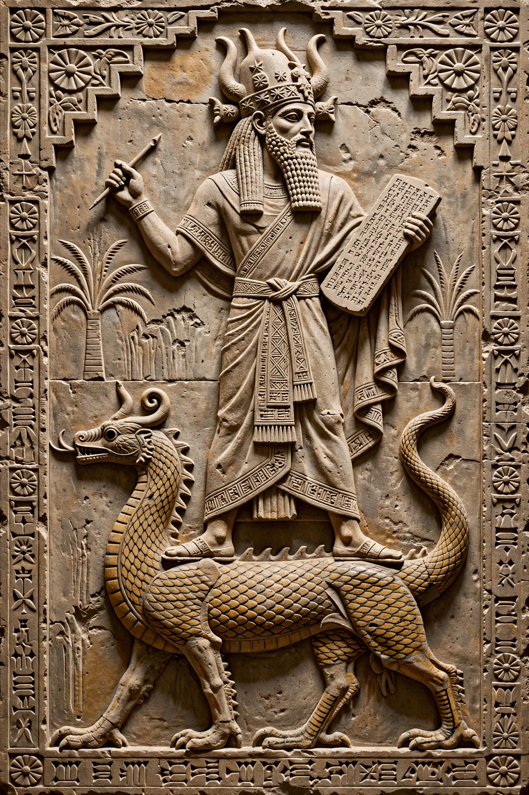

Nabu (Akkadian: 𒀭𒀝, romanized Nabû; Biblical Hebrew Nebo) was the Babylonian and Assyrian god of literacy, the rational arts, scribes and wisdom. He was the son of Marduk and his consort Sarpanit, and the grandson of Ea. His wife was Tashmet.

| Abode | Borsippa |
|---|---|
| Symbol | Clay tablet and stylus |
| Parents | Marduk and Sarpanit |
| Spouse | Tashmet (also Nanaya in later periods) |
| Greek equivalent | Apollo / Hermes associations |
Nabu's main sanctuary was the Ezida temple at Borsippa, near Babylon, with a ziggurat known as the 'House of the Seven Bonds of Heaven and Earth'. During Babylon's New Year (Akitu) festival, his statue travelled to Babylon to join Marduk. His cult grew greatly in the first millennium BCE in Assyria, where kings such as Ashurbanipal credited him with scribal skill. Babylonian royal names such as Nebuchadnezzar ('Nabu, protect my heir') and Nabonidus contain his name.
Nabu appears in the Hebrew Bible as Nebo (Isaiah 46). In Hellenistic syncretism he was equated with Apollo and his planet with Mercury. Aramaic and Mandaean traditions retained traces of his cult into late antiquity.